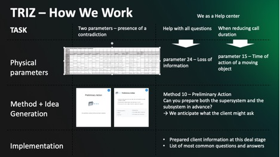

Sessions of every kind — sparking bold ideas, smarter decisions, clearer strategy, deeper customer understanding, and better product ways.
50+
teams
2,500
hours of individual and team coaching
200+
strategic & disrupt sessions
100+
hours of facilitation
Cases
Cultural shift in 1500 employee's organization
When a company of 1,500 people lives like a startup — energy is high, but chaos rules. No processes, no clear goals, no feedback loops. Friendliness at all levels turned into blurred accountability.
Challenge:
To bring clarity without killing the spirit — understand where the company really was in its lifecycle, redefine leadership styles, and build the structure that supports growth.
Approach:
We combined diagnostics and experiential learning:
- Leadership development: workshops based on Adizes Leadership Styles and Adizes Corporate Lifecycle models.
- Team Bonding Sessions: sociometry, Management 3.0 practices.
- Strategic Sessions: focus on synchronization across teams and product lines.
- Agile Ceremonies: retrospectives, planning sessions, and process optimization workshops.
Result:
+5 percentage points in market share and a visible rise in engagement — not just numbers, but a company finally moving in one rhythm.
OKR Goal Setting for a Breakthrough Product
The product team felt stuck. They were working hard — but direction was missing. Every team had its own priorities, and nobody could clearly say how their work supported the company's goals.
Challenge:
Create a clear, ambitious direction for the product — one that inspires, aligns, and drives measurable results.
Approach:
We ran a series of structured yet creative sessions to connect strategy with execution:
- Goal Alignment Workshop: linking product OKRs to company-level objectives.
- Metrics & Milestones Workshop: defining clear success indicators and step-by-step actions.
- Innovation Boost: using TRIZ to generate breakthrough ideas for achieving goals in new ways.
- Strategic Review Session: testing OKRs for clarity, relevance, and motivation.
Result:
A unified vision across teams, measurable goals that inspired action — and a roadmap filled with innovative, achievable steps toward the next market breakthrough.
Other Cases
Various successful engagements including Scrum implementation, HR transformation, strategic facilitation, and comprehensive team coaching programs across different industries.
Sessions
Where wisdom sparks wild ideas

Use script to choose the best tool for you
Team Bonding Sessions
Sociometry, Management 3.0 practices
Strategic Sessions
Deep strategic planning and alignment sessions
Agile Ceremonies
Retrospectives, Plannings, Process optimizations
Business Games
Product games (Snowflowers factory), interactions understanding (Hierarchy), express emotions & difficult feelings (Lego)
Innovative Sessions
Theory of Innovative Tasks Solutions (TRIZ), Job-to-be-done (JTBD), Lego Serious Play (LSP), Blue Ocean Strategy
TRIZ
Resolves contradictions without compromise by "changing the logic level"
1h prep, session length from 2.5h
🍫 The Story of the Chocolate and the Liqueur
Once upon a time, making chocolate liqueur candies was a nightmare. First, they made the chocolate shells and waited for them to harden. Then someone had to fill each one — manually, with a syringe! It was slow, messy, and full of defects.
Engineers tried to improve the tools, speed up the process, hire more people... But all that was optimization, not innovation.
The real breakthrough came when someone asked a different question: "What if the filling didn't have to be liquid when we put it inside?"
The solution was simple — freeze the liqueur, then dip it into hot chocolate. The chocolate hardens first, and as the candy warms up, the filling melts inside. Perfect candy, no syringes, no waste.
🚀 The Lesson
Innovation isn't about new tools — it's about new logic. It's what happens when we stop choosing between fast or perfect, flexible or reliable — and start asking how we can have both.
Session Structure:
Goal: Turn contradictions into breakthroughs — not compromises.
🎯 1. Strengthen the Contradiction
Formulate the key conflict clearly — what prevents the system from improving.
Make both sides extreme to reveal the real tension.
Example: "Partner knows all our products" ↔ "We spend zero time on training."
🎭 Purpose: Shift from vague problems to a precise contradiction.
🎯 2. Translate into TRIZ Parameters
Identify which technical or business parameters are in conflict (e.g., loss of information vs loss of time).
This allows you to use the TRIZ Contradiction Matrix effectively.
🧭 Purpose: Move from intuition to a structured analytical view.
🎯 3. Explore TRIZ Principles
Find relevant inventive principles from the matrix.
Examples:
- "Copying" — use a replica instead of the original.
- "Helper" — add an assisting element to overcome a limitation.
- "Segmentation" — divide the system into independent parts.
💡 Purpose: Open new paths of thinking instead of linear problem-solving.
🎯 4. Generate and Evaluate Solutions
Apply selected principles to your specific context.
Example outcomes from a real session:
- Partner knowledge sharing chat.
- Online micro-learning (on partners' side).
- Partner self-training mechanism.
🚀 Purpose: Transform the contradiction into system evolution.
✨ Result:
Not a compromise — a qualitative leap.
The contradiction is resolved by design, not by trade-off.
About Me
Natalia Poliachenko
How it started
I've always been curious about what makes people and teams thrive — that spark when purpose meets creativity.
What I believe
Real change starts with awareness and conversation, not with plans. It grows from curiosity, courage, and collaboration.
My way of working
I blend strategy with intuition, structure with play. Because transformation works best when it feels alive — inspiring, human, and fun.
Get in Touch
Ready to transform your organization?
natalie.sessions.lux@gmail.com